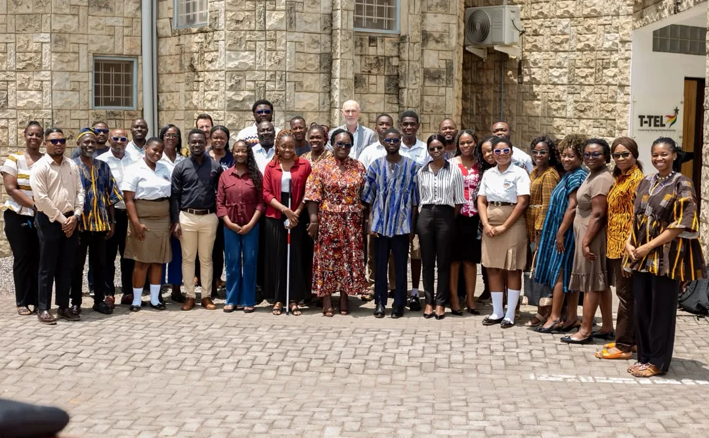
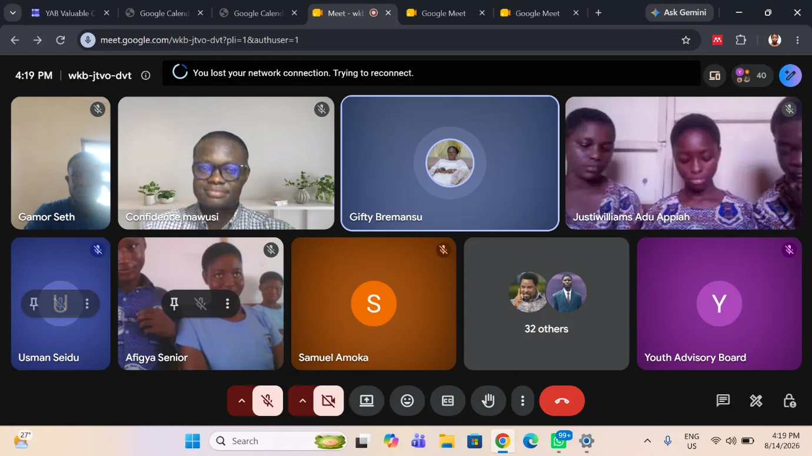

YAB joins discussion on sustaining values learning
At T-TEL’s fifteenth LiT planning meeting, YAB contributed to discussions on supporting learners beyond the Handbook’s current 22-session cycle.
Read storyBringing young people into the decisions shaping Ghana’s education, with the confidence to lead and the values to make a difference.
The Youth Advisory Board is a platform for young Ghanaians to participate meaningfully in education policy and practice.
Established in 2024, YAB connects student experience with education reform, from shaping the Essential Values for Ghanaian Youth Handbook to amplifying youth perspectives in national conversations.
Get to know usWe connect young people, schools and institutions through practical programmes that make education more inclusive and values-led.
All our programmesHelping student-led Values Learning Communities turn the Essential Values for Ghanaian Youth Handbook into daily practice.
Explore programmeBuilding structured student feedback pathways to strengthen the implementation of education reforms. Pilot arrangements depend on GES authorisation.
Explore programmeInteractive discussions where young people explore values, leadership, inclusion and the realities of school and community life.
Explore programmeBringing young people’s perspectives into education-sector dialogue, stakeholder partnerships and the reform implementation process.
Explore programme
The Essential Values Handbook is more than a document. Through Values Learning Communities, peer guides turn ideas into practical conversations about the choices young people make every day.
YAB contributed to a youth-led process of developing Ghana’s values handbook.
Student-led sessions bring values into everyday school life.
Follow our meetings, youth conversations and education-sector engagements.
View all updatesAt T-TEL’s fifteenth LiT planning meeting, YAB contributed to discussions on supporting learners beyond the Handbook’s current 22-session cycle.
Read storyYAB and students helped demonstrate how the Essential Values Handbook is being brought to life in schools.
Read story
An interactive webinar invited young people to move from learning about values to championing them in their communities.
Read storyYoung people should not only be beneficiaries of decisions about their future. They should help shape those decisions.
THE IDEA BEHIND OUR WORK
Students, educators, youth groups, partners and change-makers all have a part to play.